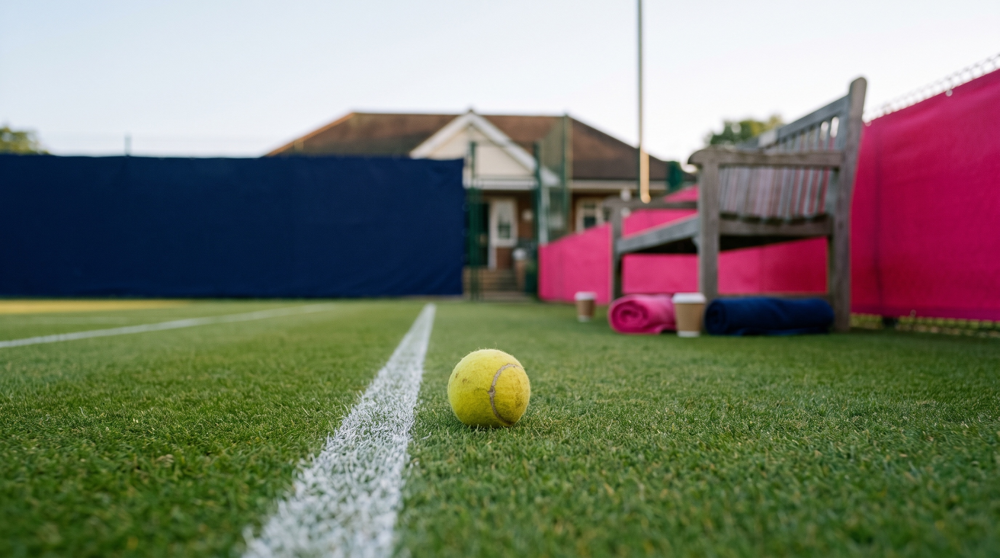
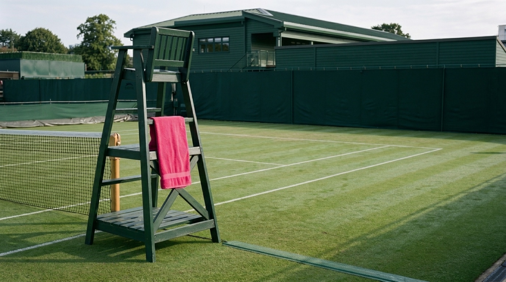
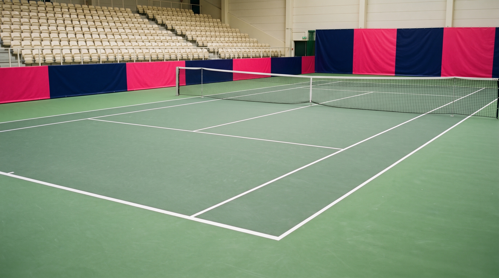
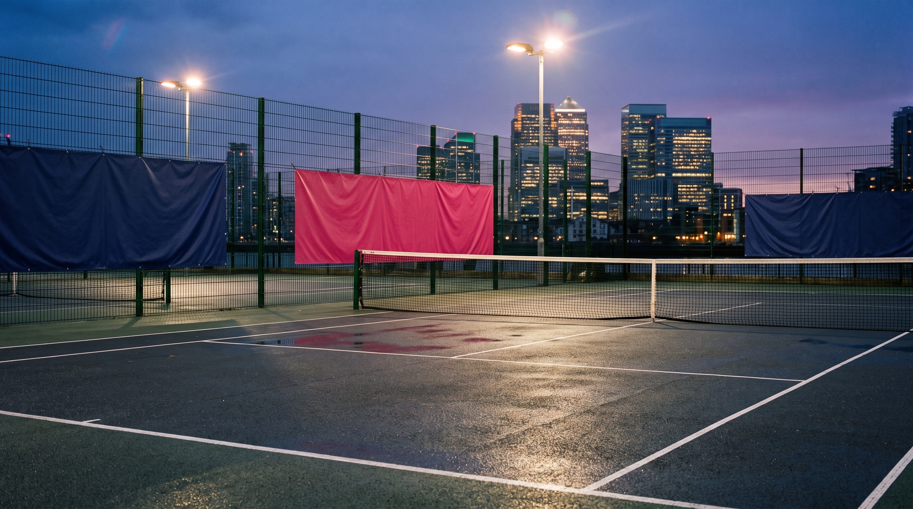

We hire a famous tennis player. We put them on a London court one week before the Laver Cup. Our clients, partners and employees play three short games against them. We film everything.
Britain invented queuing for things worth waiting for. This is one of them.

Part 1 · The Warm-Up · WorldFirst UK01
02 · THE PROBLEM
02
Why we need our own event
Our Laver Cup deal has no people in it.
Our rights: a logo, a booth, some tickets. No player images. No Alcaraz anywhere in the UK. Campaigns run on faces and stories — our package contains neither.
That's not a complaint. It's a brief.
Part 1 · The Warm-Up · WorldFirst UK02
03 · THE FIX
03
The answer in two moves
Can't borrow a star? Hire one.
Move 1
Our own star
We pay one well-known British player directly. Their face, name and footage become ours — fully cleared, usable for a year. No committees, no blind draws.
Move 2
The week before
We hold it one week ahead of the tournament. No event-week restrictions apply, and London's tennis buzz amplifies us for free. We are the warm-up act — and we say so.
One rule: we never say "Laver Cup" in the creative. The timing, the city and the red-blue look make the connection for us — legally and cleanly.
Part 1 · The Warm-Up · WorldFirst UK03
04 · THE EVENT
04
One court · one afternoon · three games
Seventy guests. One professional. A very orderly queue.
The shape
The star walks on and holds up a World Card: "Win a game, and I'll sign it." Then three games, about three hours, every point filmed.
The guest list
50 clients & partners · 20 KOLs & ambassadors · plus our employees. Everyone plays. Private invitations only — which keeps us inside the hospitality rules.
The take-home
Every player gets their own clip by QR within minutes. Game winners enter the grand draw. Applause either way — we're not animals.
Game 1
One Point Slam
You vs. the pro. One point.
Game 2
Return the Rocket
Survive one serve.
Game 3
The Derby
Antom Blue vs WorldFirst Red.
Part 1 · The Warm-Up · WorldFirst UK04
05 · GAME 1
G1
Game 1 · everyone plays
One Point Slam.
How it works
You — or you and a teammate — against the pro. One point. That's the whole game.
About 90 seconds per person, so all 70 guests get their moment.
Win your point → straight into the grand draw.
Why it works
One point is winnable enough that everyone tries, and short enough that nobody queues long. Every point is a ready-made 20-second video with a beginning, a middle and — for most of us — a dignified end.
Part 1 · The Warm-Up · WorldFirst UK05
06 · GAME 2
G2
Game 2 · the spectacle — God save the returner
Return the Rocket.
How it works
The pro serves at full speed. You stand there. Bravely.
Touch it — the crowd roars. Return it — you enter the grand draw twice.
Best owned by a big-serve legend: "face the fastest serve in British history" sells itself.
The content
Slow-motion serves, chalk dust, heroic failure. The most shareable 15 seconds of the day.
Part 1 · The Warm-Up · WorldFirst UK06
07 · GAME 3
G3
Game 3 · the finale
The Derby: Antom Blue vs WorldFirst Red.
How it works
Guests drafted into two squads — sister brands, one trophy.
A short doubles tie; the star plays a set for each side, loyal to no one.
A family disagreement, settled properly: best of three, then drinks.
Why a derby
It mirrors the tournament's own Europe-vs-World format without borrowing a single right — and it gives both brands a reason to bring their best guests. (Antom team gets a heads-up before this circulates.)
Part 1 · The Warm-Up · WorldFirst UK07
08 · THE PROP & THE PRIZES
08
The World Card — held up, signed, won
The hero prop is the product.
The prop
Every key image puts the physical WorldFirst World Card in the star's hand — held up like a trophy, signed like an autograph card, laid on the net like a challenge. One product, one image system, all campaign long.
The gift shelf — signed live by the star
The Big Card — giant World Card replica, signed and framed. The grand-draw hero gift.
Red WorldFirst rackets and ball tubes, signed on the day
Your own fight-poster print, signed by the star
Grand draw, on court at the end: Laver Cup hospitality tickets + the signed set. Drawn inside our private event — that keeps it within the ticket rules. Nothing Laver-branded is produced.
Part 1 · The Warm-Up · WorldFirst UK08
09 · THE PEOPLE
09
Four roles — all of them ours to film
The cast.
The Star
The hired player. Charming on camera, ruthless on court. Face and name ours for a year — World Card in hand in every hero shot.
The Challengers
Our employees. Fight-night intro cards, mock training videos, unearned confidence.
The Friends
Invited clients and partners. They play, they're filmed, their companies join the story.
The Commentator
Dry, market-report delivery: "The CFO opened strong. The position collapsed."
Part 1 · The Warm-Up · WorldFirst UK09
10 · THE STAR, PRICED
10
Fee estimates only — real numbers come from agency quotes
Who we hire, and what it costs.
Option
Profile (examples of the tier)
Est. fee for one day*
Notes
British legend ✦
Tim Henman — retired, universally known in the UK, great with a crowd · WIKI ↗
£15–30k
Recommended. Best recognition per pound. No schedule conflicts.
Big-serve legend ✦
Greg Rusedski — once the fastest serve in the world · WIKI ↗
National-news level. Only if leadership wants a flagship moment.
*One appearance day + 12 months of use on our own social and web channels (UK). Add 10–20% agency fee. Paid-ad usage costs more. Diligence before signing: no payments/banking sponsor conflicts, clean profile, free on the date. Named players are tier examples, not confirmed targets. Photos & links: Wikipedia. Two-star option: a legend + a recent women's star ≈ £25–45k — one captain per Derby squad, twice the content.
Part 1 · The Warm-Up · WorldFirst UK10
11 · THE PLACE
11
One court, half a day, in or near London
Three venue options.

A · The classic club
Ivy, dew, old money on camera. Est. £3–8k for a half day.

B · The indoor centre
Weatherproof, filming-friendly. Est. £2–5k. The sensible choice.

C · The skyline court
Canary Wharf behind the fence, clients walk over. Est. £1–4k + dressing.
Whichever we pick: book an indoor backup. It's London, in September. We all know how this goes.
Part 1 · The Warm-Up · WorldFirst UK11
12 · THE CONTENT
12
Shoot one afternoon, publish for a month
Three weeks of content from one day.
Before · Sept 1–14
Announcement post: "We hired backup."
Challenger intro cards — fight-poster portraits
Mock training videos in the office (deliberately terrible)
Event day · ~Sept 16
Every point filmed; QR clips within minutes
60–90s main film + 15s cuts
The hero shot: star + World Card — our key image for the year
After · into tennis week
Main film drops as tennis week opens: "The warm-up is over."
A legend brings national recognition and broadcast friends. One post on their own channels is written into the contract; their media contacts get courtside invitations.
KOLs on court
Creators play the gauntlet
Losing to a legend IS the content. They post their own clips to their own audiences, then get O2 tickets for tennis-week follow-up content. 20 of the 70 places are theirs.
Brand ambassadors
Clients with a voice
Ambassador clients get court time, a photo with the star, and first priority in the grand draw. PR builds the story around the flagship ambassador.
Every guest leaves holding ready-made content: their clip, their photo, their intro card. Amplification is built in, not bolted on.
Part 1 · The Warm-Up · WorldFirst UK13
14 · ACT 1 GOALS
14
Act 1 goals — reported internally, numbers first
Three goals. All of them. With numbers.
Goal 1 · Awareness
More of the UK knows WorldFirst
5M+
campaign impressions (draft)
UK share of voice during tennis week vs September baseline
Branded search uplift; main film views + clip reach
Follow-up meeting inside 72 hours for every hosted client
Goal 3 · New revenue
New customers, new money
90-day
new-revenue attribution window
Leads and account sign-ups from the campaign
New-customer revenue attributed within 90 days — the headline number; NFM secondary
Alignment
Mirrors how the team is measured: new-customer revenue headline (co-owned with commercial/KA), NFM secondary, and every hospitality seat reported on business return, not attendance. Draft targets to be agreed with commercial.
Part 1 · The Warm-Up · WorldFirst UK14
15 · TIMELINE
15
Ten weeks out
Book the star before Europe goes on holiday. All of it.
Jul 14–18
Send the agency brief · place venue holds · check the concept with the sports-sponsorship team · write the signed gift set into the talent contract.
By Jul 31
Hard deadline: shortlist the player and lock the client invite list.
August
Sign the contract · confirm the venue · book production · pick the employee challengers · build content templates.
Sept 1–14
Teasers live: announcement, intro cards, training videos.
~Sept 16
THE WARM-UP. One court, one afternoon, every point filmed.
Sept 19 →
Main film out as tennis week starts · recaps all week · 72-hour client follow-ups · 90-day revenue tracking begins.
Part 1 · The Warm-Up · WorldFirst UK15
16 · BUDGET
16
Rough bands — quotes will sharpen them
Three sizes.
Cost line
Lean
Standard ✦
Flagship
Player (day + 12-month organic use)
£10–20k
£25–45k (two stars)
£100k+ (Murray tier)
Venue + dressing
£2–4k
£4–8k
£8–15k
Production (crew, edit, QR clips)
£12–18k
£18–30k
£40–60k
Prizes + gifts
£3–5k
£5–8k
£10k
Client hospitality
£2–4k
£5–10k
£15k+
Total
~£30–50k
~£60–100k
~£175k+
For scale: two weeks on one mid-size London billboard can cost more than the whole Lean version — and this produces footage we own for a year.
Part 1 · The Warm-Up · WorldFirst UK16
17 · RULES WE FOLLOW
17
Stay clean
Six rules. No exceptions.
Never say "Laver Cup" in our creative. The player is "a British tennis legend". Timing does the rest.
Check the player has no deal with another payments or banking brand before we sign.
Clients attend by private invitation only. Ticket prizes are drawn inside the closed event — never in public marketing.
All gifts are WorldFirst-branded, signed live by our hired star. Nothing Laver-branded is produced.
Everyone on camera signs a filming release; usage rights written into the player's contract.
The plan goes past the sports-sponsorship team before the agency brief goes out.
Part 1 · The Warm-Up · WorldFirst UK17
18 · NEXT STEPS
18
Move fast
Decide this week. Send this today.
Decisions needed this week
Approve concept + budget band (Lean / Standard / Flagship)
Approve the gift set (the Big Card, rackets, posters)
Confirm the date window (~Sept 16)
Name the owner of the client invite list
The agency brief — ready to send
"UK fintech seeks a well-known British tennis name (retired preferred) for one London appearance day around 16 September: playing short challenge games against staff and guests, signing a set of WorldFirst-branded gifts, light filming, 12 months' use on our own channels. No conflicts with payments/banking sponsors. Budget £10–45k depending on profile. Please send options, fees and availability by 25 July."